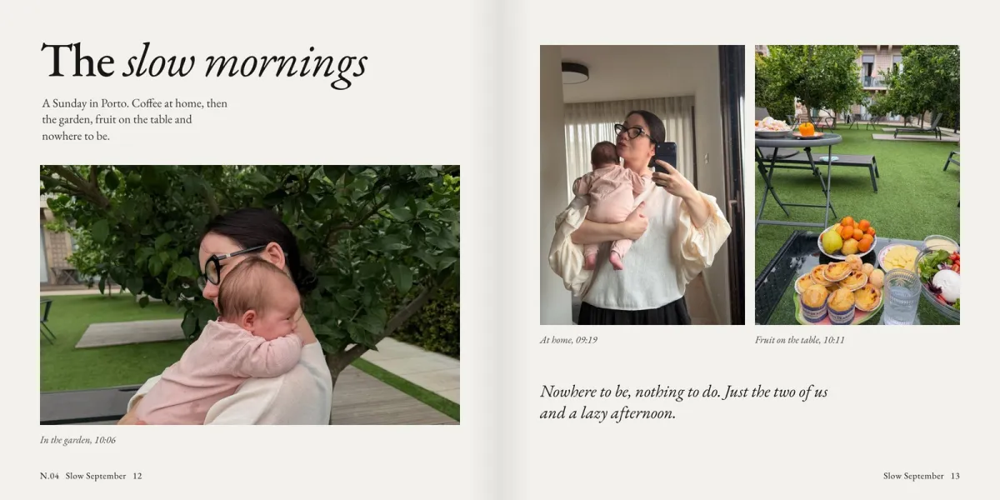

Wedding Photo Book Ideas: What to Include Beyond the Big Moments
Updated Nov 2026 · by
Olga, designer at ReMeet, 10 years in editorial design
A great wedding photo book goes beyond the ceremony and first dance. Include the getting-ready chaos, guest reactions, detail shots, and phone photos that fill in the story. Share your full album with ReMeet and I design a 100-page book for $79. Proof in 72 hours.

Start with a timeline
The simplest way to organize a wedding book is to follow the day as it happened. Your wedding already had a natural arc. The book should follow it.

A typical wedding book timeline:
| Chapter | What goes in | Pages |
|---|
| Getting ready | Hair, makeup, dress, nervous laughter, the quiet room before it all starts | 4-8 |
| First look or arrival | The first time you see each other, guests arriving, the venue | 2-4 |
| Ceremony | Walking down the aisle, vows, rings, the kiss, wide venue shot | 6-10 |
| Portraits | Couple shots, wedding party, family formals | 4-6 |
| Reception | First dance, toasts, cake, dancing, candids, late-night moments | 8-12 |
| Details and exit | Flowers, table settings, rings, the getaway car, sparklers | 2-4 |
This adds up to 26-44 pages for the core story. A 30-page book covers the highlights. A 100-page book ($79) gives room for every chapter to breathe, with full-bleed spreads between sections.
The photos between the big moments
Every wedding book has the kiss, the first dance, and the cake. What separates a good book from a great one is the in-between moments:
- Your mom zipping the dress and trying not to cry
- The groomsmen laughing about something you'll never know
- A guest's reaction during the vows
- The flower girl losing interest halfway through
- The bartender making drinks while nobody's looking
- Your shoes under the table at the end of the night
- The empty dance floor at 1 a.m. with confetti on the ground
These are the photos that bring the day back when you flip through the book five years later. The formal shots remind you what happened. The candids remind you what it felt like.
When I design a wedding book, I make sure these moments get space. A candid close-up of a guest's face during the toasts is worth as much as the couple's first dance. Sometimes more.
Mixing photographer and phone photos
Your photographer delivered 2,000 edited images. Your friends and family took another 500 on their phones. Use both.

The photographer's images are the backbone. They have the best light, composition, and color grading. But phone photos fill in what the photographer missed: the bathroom mirror selfie before the ceremony, the view from a guest's seat, the late-night pizza run, the group chat screenshots where everyone was freaking out.
Send me everything. I blend the two sources into one layout. The phone photos work best as smaller accent images next to the professional shots, not as full-bleed spreads. The mix of polished and raw makes the book feel real.
Need help sharing your album? See the Google Photos guide or the iCloud link guide.
Start your wedding book
Share your photographer's gallery and your phone photos. I'll design every page and send a proof in 72 hours.
Start your book - from $29 →
Detail shots that add texture
Detail photos are the design glue that holds a wedding book together. They create visual breaks between the people shots and give each spread a different feel. These are worth including:
- The invitation suite laid out flat
- Rings on a surface (not just on hands)
- Table numbers, place cards, menus
- The bouquet, the boutonniere
- The venue exterior, the entrance, the sign
- Food close-ups, the cake from above
- Shoes, earrings, cufflinks, the veil
Your photographer probably took all of these. When you send me the full gallery, I pull these detail shots and use them to give each spread visual variety. A close-up of the rings works perfectly next to a wide ceremony shot. A food detail pairs well with a candid of guests at the table.
Adding the honeymoon
Some couples combine the wedding and honeymoon into one book. The 100-page option ($79) works well for this: the wedding takes the first half, and the honeymoon fills the second.
Others prefer two separate 30-page books ($29 each). This makes sense when the honeymoon was a completely different mood, or when you want to give the wedding its own dedicated volume.
Either way, the design and the printing are separate decisions. You get a PDF first. If you want it printed as a hardcover, that's from $69 after you approve the design. Extra copies for parents are $69 each.
Frequently asked questions
How many photos should a wedding book have?
For a 30-page book, 60-100 photos works well. For 100 pages, 200-350 gives you room for the full story. Most weddings produce 1,500-3,000 photos. With ReMeet, you send the full set and I pick the strongest images for the layout.
Should I use my photographer's photos or phone photos?
Both. The photographer's images are the backbone of the book. Phone photos from guests fill in behind-the-scenes moments the photographer missed. Send everything and I'll blend them into a cohesive layout.
How long after the wedding should I make the book?
Ideally within the first year while memories are fresh. But there's no deadline. I've made books for couples who waited five or six years. The photos are still there and the story is still worth telling.
Can I include the honeymoon in the same book?
Yes. The 100-page option at $79 gives plenty of room for both the wedding and the honeymoon. Some couples keep them separate (two 30-page books at $29 each). It depends on how many photos you have and whether the events feel like one story or two.
Do I need to organize the photos before sending them?
No. Share your album link as is. I sort by date and timestamp, remove duplicates and blurry shots, and pick the best images. No pre-selection or organizing needed on your end.
Start your wedding book
Share your photos. I'll organize the timeline, design every page, and send a proof in 72 hours.
Start your book - from $29 →